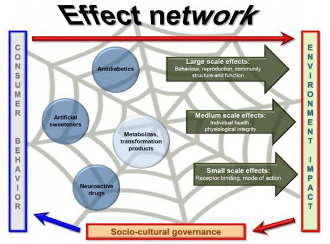

With a focus on two groups of emerging micropollutants in aquatic environments, food additives and pharmaceuticals, the project Effect-Net crosses the borders between (natural and socio-political) science and public interest by providing an analytical network which gives insight into the cross-linking of consumer behavior and ecological impact.
As a multi- and transdisciplinary project, it crosses disciplinary and social boundaries and generates a toolbox
(1) for multi-scale chemical effects as a basis for a holistic effect-based risk evaluation, and
(2) for sociocultural governance aiming at personal and political responsibility as well as a reduction of emissions of hazardous chemicals into aquatic environments.

The Heidelberg Center for the Environment (HCE) celebrated its 5th anniversary on July 6, 2016. For the celebration Effect-Net – among other projects – has also been portrayed on film.


Funded by the state of Baden-Württemberg as part of the water network
Laufzeit: 2016 bis 2021
Prof. Dr. Thomas Braunbeck
Aquatic Ecology & Toxicology
COS - Centre for Organismal Studies
University of Heidelberg
Im Neuenheimer Feld 504
D-69120 Heidelberg
braunbeck@uni-hd.de
Tel.: +49-(0)62 21-54 56 68